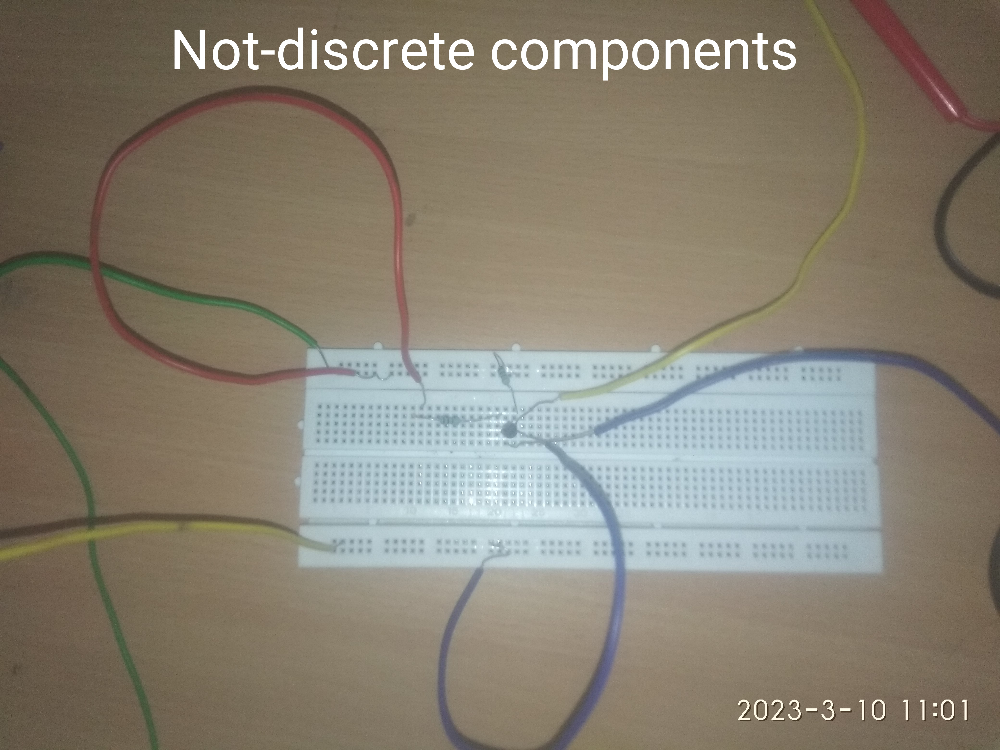
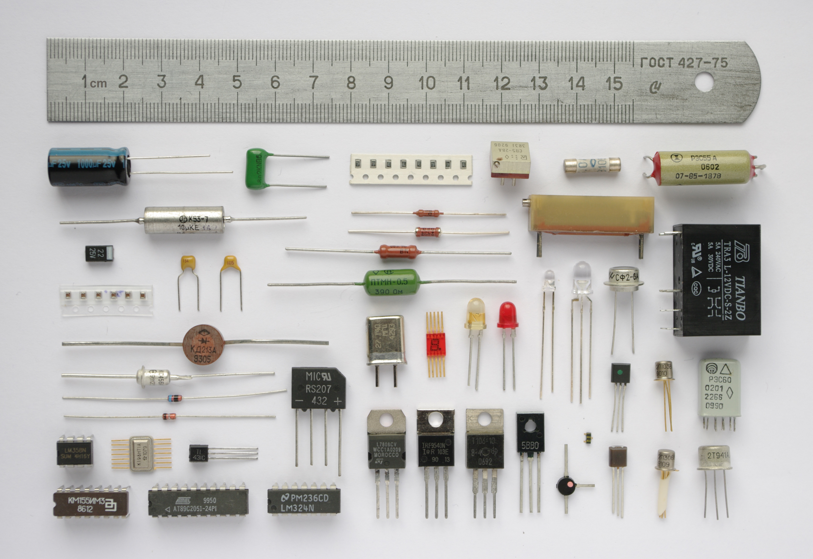
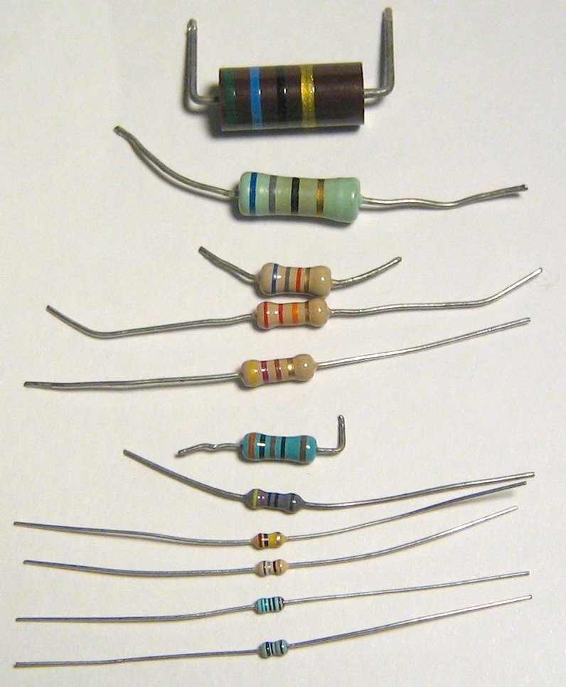
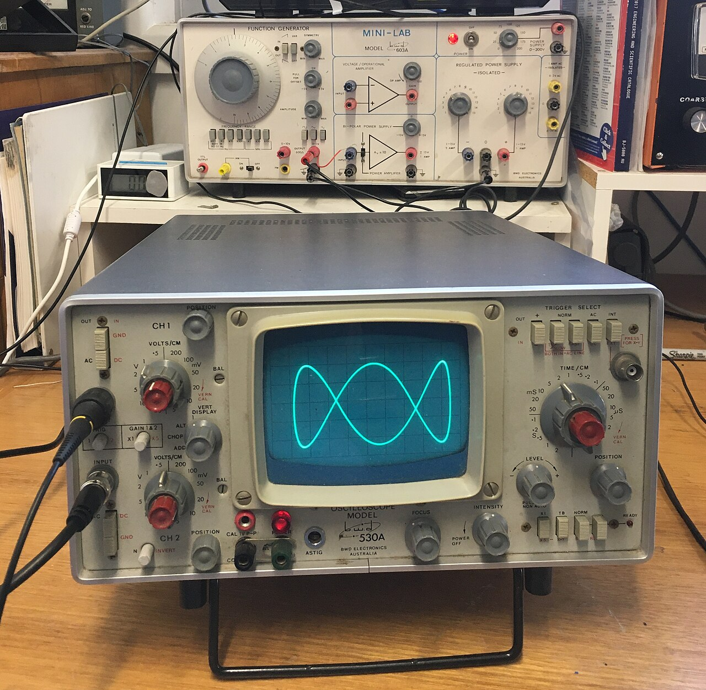
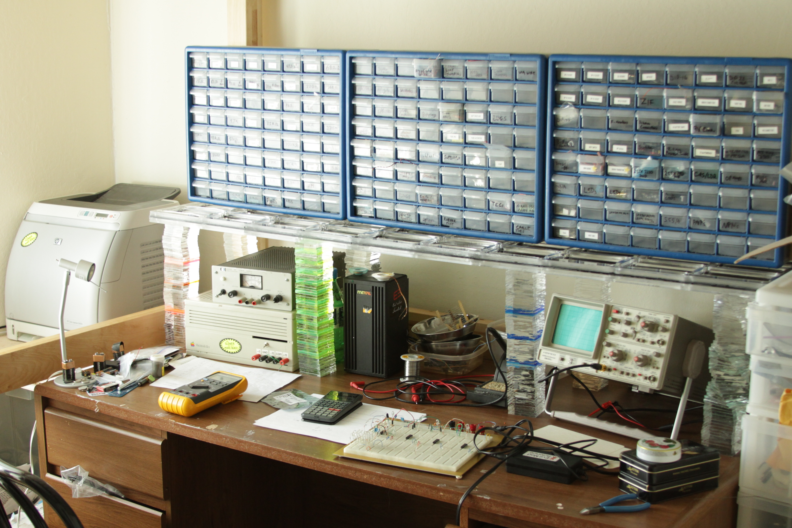

Component Reference
Resistor
Opposes current flow. Unit: Ohms (Ω). V = IR. Dissipates energy as heat. Colour bands encode resistance: 4-band (2 digits + multiplier + tolerance) or 5-band for precision.
Capacitor
Stores charge; blocks DC, passes AC. Unit: Farads (F). Q = CV. Impedance Z = 1/(jωC). Common values: pF (RF), nF (signal), μF (power supply decoupling).
Inductor
Stores energy in a magnetic field; opposes changes in current. Unit: Henries (H). Impedance Z = jωL. Passes DC, blocks high-frequency AC. Used in filters and power converters.
Diode
One-way valve for current. Forward voltage drop ~0.6–0.7V (Si). Reverse-biased: blocks current until breakdown voltage. Types: signal, Zener (voltage regulation), Schottky (fast, low Vf).
LED (Light Emitting Diode)
Emits light when forward biased. Vf: red ~1.8V, green ~2.1V, blue ~3.2V. Always use a current-limiting resistor: R = (Vs − Vf) / If. Typical If: 10–20mA.
NPN Transistor (BJT)
Current amplifier / switch. Ic = β × Ib. Three regions: cutoff (off), saturation (on), active (amplifier). β (hFE) typically 50–300. Base-Emitter junction ~0.6–0.7V when active.
AND Gate
Output is HIGH only when ALL inputs are HIGH. Boolean: Y = A · B. NAND is universal: any logic can be built from NAND gates alone. Used in masking, enable circuits.
OR Gate
Output is HIGH when ANY input is HIGH. Boolean: Y = A + B. NOR is also universal. Used in flag detection, priority circuits, alarm systems.
NOT Gate (Inverter)
Inverts the input. Y = Ā. If input is 0, output is 1 and vice versa. The bubble symbol on any gate means inversion at that pin. CMOS inverter is the simplest logic circuit.
XOR Gate
Output is HIGH when inputs DIFFER (odd number of HIGH inputs). Boolean: Y = A ⊕ B. Key component in adders and error-checking circuits. Y=0 when A=B (comparator use).
Workshop Gallery






